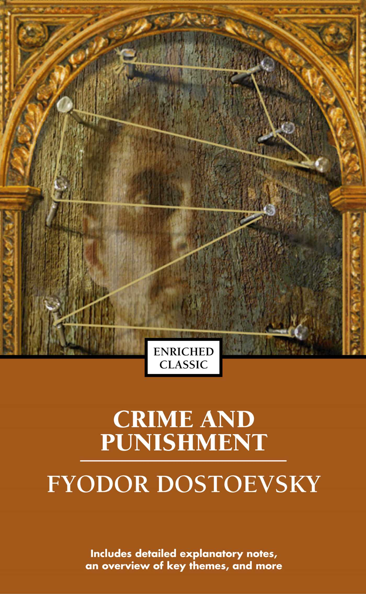

Crime and Punishment by Fyodor Dostoevsky is one of my favourite novels due to its deep psychological exploration and philosophical themes.
The novel’s focus on morality, guilt, and internal conflict makes it particularly compelling. It offers a powerful examination of human behaviour, decision-making, and the consequences of one's actions.
Its emphasis on psychological depth and introspection strongly resonates with my appreciation for layered storytelling and character-driven narratives.